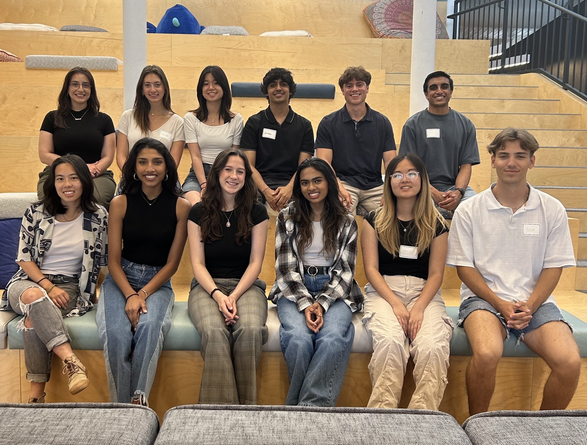
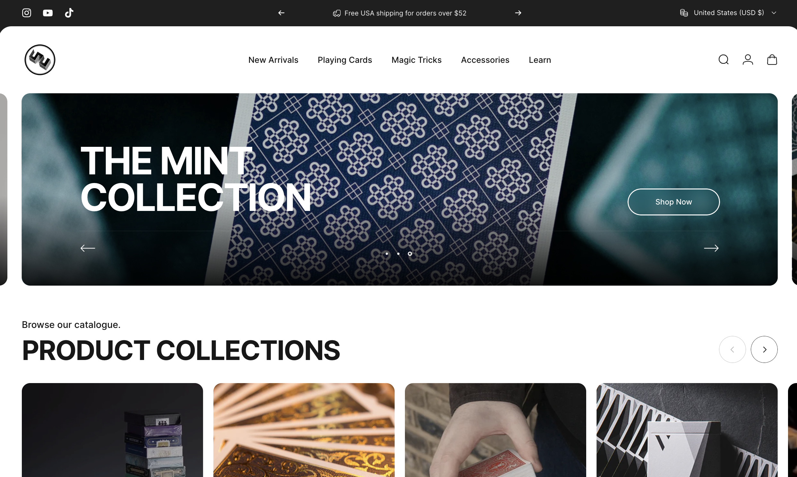
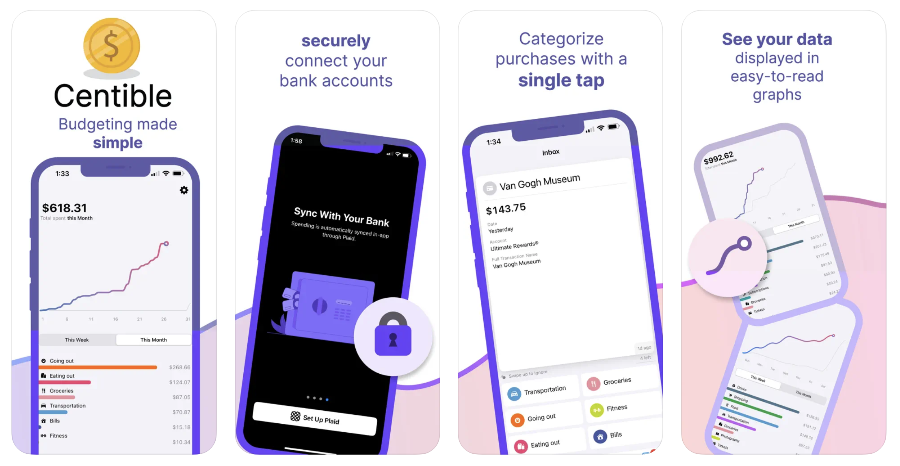
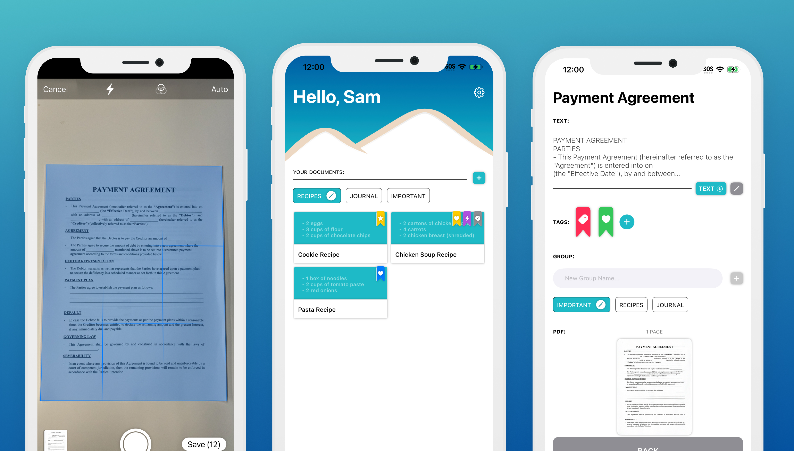
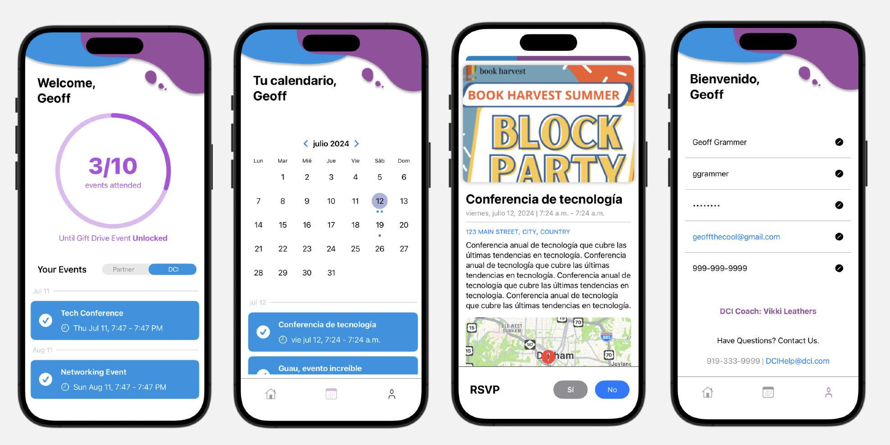

Sam Gilmore
I am a computer science student at UNC Chapel Hill with minors in data science and statistics. While I pride myself on my technical skills in Swift, JavaScript, Typescript, and SQL, what truly sets me apart is my dedication to creating powerful products that prioritize users and create a meaningful impact on the communities they inhabit.
Education
University of North Carolina
GPA: 3.98
Early College at Guilford
GPA: 4.00
Experience

iOS Software Engineer Intern
During my second internship at WillowTree, I played a pivotal role in resolving critical UI bugs that dramatically enhanced the user experience for a top 5 global hotel chain’s iOS app. I also optimized the deep linking process within the app, which significantly improved navigation efficiency and contributed to higher user retention rates. My responsibilities extended to leading the migration of external repositories, which resulted in a 12% reduction in dependency installation time, streamlining the development process. Furthermore, I increased the core view model’s code coverage by over 50%, substantially improving the reliability and maintainability of the codebase, which had a lasting impact on the project’s success.

iOS Software Engineer Intern
As an iOS Software Engineer Intern at WillowTree, I developed and optimized features for the iOS app of Europe’s largest grocer, serving a user base of 1 million monthly users. My role involved leading client discussions to tailor custom tech solutions that met specific feature requirements, ensuring the app was not only functional but also aligned with user needs. I significantly enhanced the user onboarding experience by implementing a “quick sign-up” feature that streamlined access to rewards, making the process more user-friendly. Additionally, I designed and integrated advanced analytics functions into the app, enabling data-driven decisions that empowered both the client and their users.

Software Engineer Intern
During my time with 52Kards, I developed a Shopify admin app that allowed the shop manager to add and view products, including metadata, images, and prices, using the Shopify GraphQL API. I also integrated real-time data from a wholesaler by parsing XML responses with SOAP. This project gave me hands-on experience in developing a functional and user-friendly app within the Shopify ecosystem.
Projects
Centible
As the Team Lead and Backend Engineer for Centible, I spearheaded the development of a RESTful API that integrated Plaid for secure and precise financial data retrieval. My role included enhancing both the efficiency and security of the platform by transitioning from an outdated API and leveraging Google Cloud Platform (GCP) for robust data management. Additionally, I deployed stateless Lambda functions, which played a crucial role in the successful beta release of Centible on the iOS App Store. This project allowed me to merge technical expertise with leadership, driving the project towards a successful market entry.

DocuDen
I developed DocuDen, an iOS app designed for document scanning, OCR, and organization, utilizing VisionKit and PDFKit. The app features advanced functionalities such as edge detection, image optimization, and text extraction, all aimed at enhancing document processing efficiency. I also integrated SwiftData for data persistence, enabling seamless file management and iCloud sync, which provided users with a reliable and user-friendly experience. This project showcases my ability to create feature-rich applications that address real-world needs, with a strong focus on user experience and technical robustness.

WT for Good Hackathon
As part of the WT for Good Hackathon, I partnered with Durham Children’s Initiative (DCI) to define user needs for an event management app. I was responsible for creating Figma wireframes and refining the UI/UX based on client feedback, ensuring the design was both functional and intuitive. I then led the development of a functional app prototype using Swift, which enabled event tracking and accountability, ultimately delivering a solution that met the client’s requirements and showcased the potential for real-world impact through technology.

Duke DataFest
Competing as a finalist in the Duke DataFest, I worked with my partner to analyze complex datasets and develop statistical models, including ANOVA and k-nearest neighbors. We utilized Python and various graphing tools, applying linear regression for a refined analysis of the data. Our efforts culminated in achieving top finalist status among numerous competing teams, demonstrating our ability to tackle challenging data science problems and derive meaningful insights from large datasets.
SwiftNetKit
SwiftNetKit is an open-source networking library that I developed to streamline and enhance API call handling within Swift applications. The library supports a full range of HTTP methods, including GET, POST, PUT, DELETE, and PATCH, and provides customizable URLSession configurations. One of its standout features is robust cookie management, allowing for fine-tuned control over how cookies are handled and stored across requests. In addition to cookie management, SwiftNetKit offers custom caching options and automatic retries for failed requests, ensuring reliable and efficient network communication. The library also supports batch requests and leverages Codable for seamless JSON parsing. Available on GitHub, SwiftNetKit reflects my dedication to creating powerful, reusable tools for the Swift development community, and it’s easily integrated using Swift Package Manager.
Skills
- iOS App Development with Swift & SwiftUI
- Open Source Contribution & Code Reviews
- API Integration & Network Layer Design
- Unit Testing & Test-Driven Development (TDD)
- Version Control with Git & GitHub
- Agile Development & Scrum Methodologies
Awards & Certifications
- UNC Dean's List Fall 2021/22/23, Spring 2022/23/24
- Duke DataFest Finalist
- 1st Place - WT for Good Hackathon